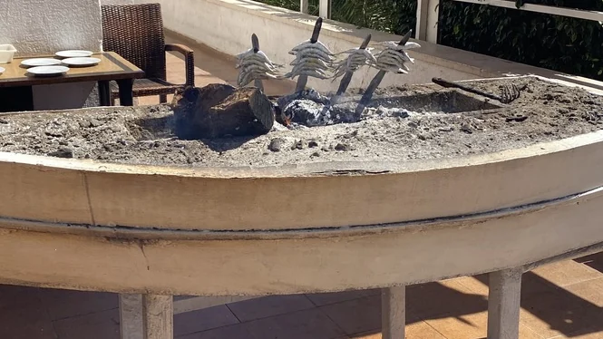
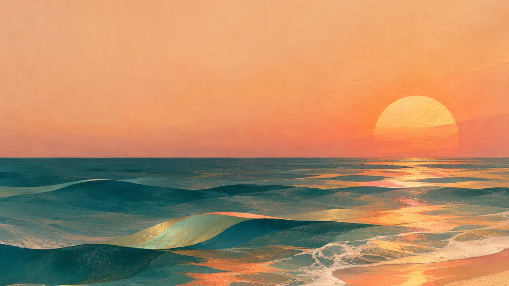
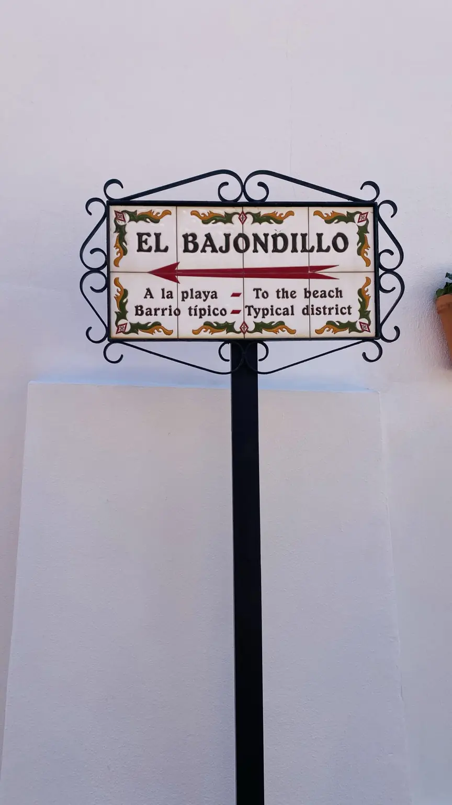

Desde el aeropuerto
La línea C1 de Cercanías enlaza el aeropuerto de Málaga con Torremolinos y otras localidades.
Consulta Renfe ↗Donde el mar se vive. Y la noche también.
La sal en la piel, una mesa compartida, una noche que se alarga. Encuentra playas, barrios y planes para vivir Torremolinos a tu manera.

ComerRistoranti, tapas e sapori locali
AgendaEventi, concerti e appuntamenti GalleryTorremolinos attraverso le fotografie
GalleryTorremolinos attraverso le fotografie
 StoriesCuriosità, luoghi e ispirazioni
StoriesCuriosità, luoghi e ispirazioni
La colonna sonora di Torremolinos
Ascolta un estratto originale di LUNE_X ispirato al Mediterraneo
La reproducción se inicia al pulsar Play · Muestra oficial de LUNE_XNo necesitas un itinerario perfecto. Sigue tu instinto y descubre tu Torremolinos.
Del primer café al último paseo: elige un lugar, guárdalo y encuentra cómo llegar.
 TORREMOLINOS · CENTRO
TORREMOLINOS · CENTROTerrazas, tapas, bares, cultura y noches para todos. Una guía de La Nogalera y sus calles cercanas, con lugares identificados y fuentes consultables.
Descubrir La Nogalera ↗Selección editorial · No es un ranking ni una guía de horarios en tiempo realLa cultura LGBTQ+ no es una nota al pie. La Nogalera y el histórico Pasaje Begoña cuentan historias reales de convivencia, memoria y libertad.
Fotografías originales de la costa, las palmeras y los rincones cotidianos de Torremolinos.

Fotografías del autor, cedidas para esta publicación. Todos los derechos reservados.
Un diario visual de playas, paseos, barrios y detalles. Fotografías del archivo y piezas ilustrativas señaladas con transparencia.
Explorar la Gallery ↗Personas, barrios, memoria y cultura más allá de la postal.
 CIUDAD / IDENTIDAD© Archivo TORREMOLINOS · Derechos reservados
CIUDAD / IDENTIDAD© Archivo TORREMOLINOS · Derechos reservadosUna historia sobre el mar, la libertad y una ciudad que va más allá de la playa.
Leer en español ↗ LGBTQ+ / CULTURATyk · CC BY-SA 3.0 · 2010
LGBTQ+ / CULTURATyk · CC BY-SA 3.0 · 2010La vida cotidiana, la música y la memoria LGBTQ+ de un lugar de encuentro.
Leer en español ↗ HISTORIA / DERECHOSBernardaAlba · CC0 · 2024
HISTORIA / DERECHOSBernardaAlba · CC0 · 2024Los hechos documentados que hicieron de este lugar un símbolo de memoria.
Leer en español ↗
La Romería, la Feria y una tradición que merece ser contada con rigor
Imagen de ambiente; no muestra la fiesta · Fotografía original autorizadaLeer la historia en español ↗Artículos originales en español con fuentes identificadas. Traducciones en preparación y revisión.
Cultura, actividades y encuentros con fuentes oficiales. Descubre una selección de próximos eventos con fecha de comprobación y acceso al programa completo.
Ver eventos y agenda ↗Selección editorial consultada el 2 de noviembre de 2026. Comprueba los detalles con los organizadores.© Archivo fotográfico TORREMOLINOSSegui ciò che ti incuriosisce. Conserva i luoghi in cui vorresti tornare. La tua Torremolinos nasce da piccole scelte e momenti da ricordare.
Non una lista da seguire. Un percorso da inventare: scegli un'atmosfera, modifica le tappe, salva il tuo itinerario.
Quattro modi di vivere la città. Il percorso cambia subito, senza attese.
Vuoi una tappa diversa? Aggiungila direttamente dai luoghi nella sezione Esplora.
Esplora tutti i luoghi ↗Il percorso è vuoto. Scegli un'atmosfera o aggiungi luoghi da Esplora.
Itinerario orientativo. Verifica accessibilità, orari e trasporti prima di partire.
Información que conviene tener a mano, respaldada por fuentes oficiales. Los servicios pueden cambiar.
La línea C1 de Cercanías enlaza el aeropuerto de Málaga con Torremolinos y otras localidades.
Consulta Renfe ↗En España, el 112 es el número gratuito de emergencias. Solo para situaciones reales.
Llamar al 112Del centro a la playa hay desniveles y escaleras. Consulta los accesos disponibles antes de bajar.
Turismo oficial ↗Activa el mapa cuando lo necesites. Usamos OpenStreetMap, sin rastrear tu ubicación desde esta app.
Al activarlo se cargarán contenidos de OpenStreetMap.
Esta guía independiente quiere sumar voces locales, información comprobada y recomendaciones transparentes. Los acuerdos comerciales nunca se presentarán como reseñas imparciales.